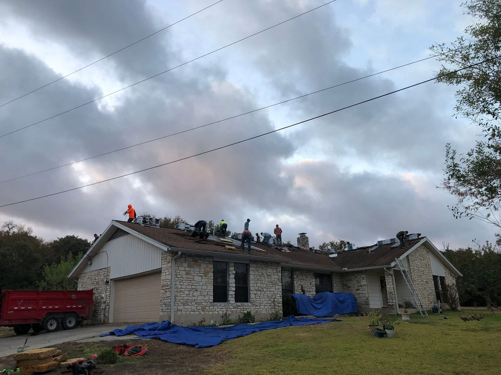
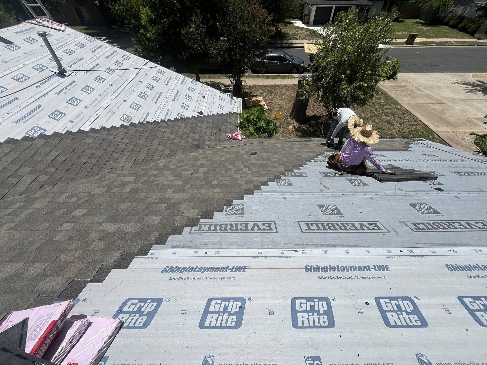

Hail is the reason most Central Texas roofs get replaced, so it makes sense that the question we hear most at roofing estimates is whether impact-resistant shingles are worth paying for. The honest answer is: often yes, but not for every house, and the insurance discount is the part people most often get wrong.
This guide explains what "Class 4" really means, what the lab test does and does not prove, what Class 4 roofs cost on an Austin-area home in 2026, how the Texas insurance discount works, and when we would tell you to skip the upgrade.
What "impact-resistant" and "Class 4" mean
An impact-resistant shingle is one that has passed a standardized lab test for hail, and Class 4 is the highest rating on that test. The test most shingles use is UL 2218.
Steel balls are dropped onto the roofing from the height needed to hit with the same energy as a hailstone of that size. The ball is 1.25 inches for Class 1, 1.50 inches for Class 2, 1.75 inches for Class 3 and 2.00 inches for Class 4.
Each spot is hit twice. The shingle passes if nothing cracks, tears or ruptures through to the back.
Dented shingles and crushed or loose granules on the top surface do not count as a failure under the test. That detail matters later, when we get to insurance claims.
Some products also carry an FM 4473 rating, a similar test that uses ice balls instead of steel. Either way, the rating should be printed on the product label and the wrapper, not just in a sales brochure.
Does a Class 4 roof stop hail damage?
A Class 4 roof resists hail much better than a standard shingle roof, but it is not hail-proof. The rating proves the product passed a lab test when it was new. It does not promise how a ten-year-old roof will handle a storm with baseball-size hail.
Independent testing backs up the upgrade. The Insurance Institute for Business and Home Safety (IBHS) ran UL 2218 tests on 22 asphalt shingle products bought from local suppliers.
Impact-resistant architectural shingles performed about 25 to 80 percent better than basic architectural shingles across the four ball sizes. Polymer-modified impact-resistant shingles, the rubberized kind, did better still: about 20 to 50 percent better than traditional impact-resistant shingles.
In plain terms: Class 4 shingles turn a lot of storms that would have meant a new roof into storms that mean nothing, or a small repair. A severe hailstorm can still damage them.
What Class 4 shingles cost in Austin
Class 4 shingles usually cost 5 to 15 percent more than a comparable standard shingle, and the rest of the roof (tear-off, decking repairs, underlayment, flashing, ventilation) costs the same either way. Here is where they fit among the roofs we install on a typical 2,000 sq ft home:
| Roof | 2,000 sq ft home, installed | Hail notes |
|---|---|---|
| 3-tab shingles | $9,000 to $13,000 | The least hail resistant. Fine for a rental or a quick sale. |
| Architectural shingles | $11,000 to $18,000 | The Austin standard. Class 4 versions cost about 5 to 15 percent more. |
| Luxury shingles | $17,000 to $28,000 | Thicker, heavier profiles. Many lines come in impact-rated versions. |
| Synthetic slate or shake | $22,000 to $36,000 | Usually Class 4 rated. A slate or shake look without the weight. |
| Standing-seam metal | $25,000 to $45,000 | Hail can dent it, but it rarely leaks from hail. See our metal vs shingle guide. |
So on most Austin homes, a Class 4 architectural roof lands toward the top of the architectural range. Steep pitches, multiple stories, rotten decking and complicated rooflines move the price more than the shingle choice does. Our Austin roof replacement cost guide breaks down everything that drives the number.
How the Texas insurance discount works
In Texas, an impact-resistant roof can earn a discount on your homeowners premium, but each insurance company sets its own amount and its own rules. The Texas Department of Insurance (TDI) says the discount for each class is set company by company, that a Class 4 roof gets the highest credit, and that each insurer decides which test results it will accept.
That means nobody, including us, can promise you a specific savings number. Your agent can. Before you choose a shingle, call and ask:
- Do you offer a credit for an impact-resistant roof? Some carriers do and some do not.
- How much would it save me per year with a Class 4 roof compared with a standard one?
- What proof do you need? TDI notes that insurers may use the state's impact-resistant roofing installation form (Form PC068) or require their own.
- Does choosing an impact-resistant roof change anything else in my policy? Read the answer carefully, especially anything about cosmetic damage.
Then do the simple math: divide the extra cost of the Class 4 upgrade on your quote by the yearly savings your agent gives you. That is how many years it takes to pay for itself, before you count any storm it saves you from.
Keep the paperwork. Ask for the exact product name and impact class in writing on the quote and the final invoice, and take a photo of a shingle wrapper showing the label. If you switch insurance companies later, the new one will ask for the same proof.

Your HOA cannot block impact-resistant shingles
Texas law stops an HOA from prohibiting wind and hail resistant shingles, as long as they fit in. Under Texas Property Code Section 202.011, a property owners' association may not prohibit or restrict shingles designed mainly to be wind and hail resistant, energy efficient or solar, when the shingles resemble the ones allowed in the subdivision, are more durable and of equal or better quality, and match the look of the surrounding homes.
In practice, that means a Class 4 architectural shingle in a color close to the neighborhood's usually goes through architectural review without a fight. You may still need to submit the color and product for review, so we include the details in the paperwork. Our HOA approval guide explains how that process works around Austin.
When Class 4 shingles are worth it, and when they are not
Class 4 shingles are worth it when you plan to stay in the house for a while and your insurer gives a real credit. They are the upgrade we recommend most often on Austin-area homes, because the extra cost is modest and hail is the most common reason roofs here get replaced.
Usually worth it:
- You plan to stay five years or more.
- Your insurer offers a meaningful yearly credit for a Class 4 roof.
- You have been through a hail claim before and do not want another one.
- Your HOA wants the look of shingles, so metal is not an option.
Often not worth it:
- You are selling within a year or two and the buyer will not pay extra for the rating.
- Your insurer offers no credit and the budget is tight. A good standard architectural roof, installed well, is the right call.
- You are already leaning toward standing-seam metal, which handles hail in a different way.
- You only need a repair. Matching a few Class 4 shingles into a standard roof does not give you a Class 4 roof.
We will tell you plainly which side of that line your house falls on. Sometimes the cheaper roof is the right one.
Want a side-by-side number? Ask for your quote both ways, standard architectural and Class 4, and John will line-item the difference so you can check it against your insurance savings.
Get both prices →Replacing a hail-damaged roof with Class 4
If hail has already damaged your roof, an insurance-funded replacement is the cheapest moment to move up to Class 4, because you only pay the difference in material. Your claim pays to replace what you had. If you choose a better shingle, the upgrade cost is yours, and it should show up as its own line on the quote.
One rule to know: Texas law makes it illegal for a contractor to pay, waive or rebate your insurance deductible. Any roofer who offers to "cover your deductible" is offering to break the law. Our storm damage roof guide walks through the claim process step by step.

What to ask any roofer about impact-resistant shingles
- Which exact product and impact class are you quoting? "Impact-resistant" on a quote without a product name is not enough for your insurer.
- Is the rating UL 2218 or FM 4473 Class 4? Some products say they were tested in a way "modeled after" a standard rather than listed by a lab. Check the label.
- Is the upgrade a separate line item? You need to see what the Class 4 rating costs on its own.
- Are you replacing the underlayment, flashing and vents too? A great shingle on a tired system still leaks.
- Who handles the permit and the HOA? We do both on every roof.
John walks every roofing estimate himself, gets on the roof, and writes a line-itemed quote. We replace roofs across greater Austin, including Round Rock, Cedar Park and Georgetown. See our work and the roofs we install on our Austin roofing page.
Class 4 shingle questions, answered
What is a Class 4 shingle?
A Class 4 shingle has the highest rating on the UL 2218 hail test. In that test, a 2-inch steel ball is dropped twice on the same spot, and the shingle passes if nothing cracks or tears through to the back.
How much more do Class 4 shingles cost?
Class 4 shingles usually cost 5 to 15 percent more than a comparable standard shingle. On a typical 2,000 sq ft Austin home, architectural shingle roofs run $11,000 to $18,000, and a Class 4 architectural roof lands toward the top of that range.
Do Class 4 shingles lower insurance in Texas?
They can. The Texas Department of Insurance says impact-resistant roofing can earn a premium credit, with Class 4 getting the highest credit, but each insurer sets its own amount and rules. Ask your agent what you would save before you choose.
Are Class 4 shingles hail-proof?
No. Class 4 shingles resist hail much better than standard shingles, but the rating is a lab test on new material. Very large hail can still damage them, and dents or granule loss can happen without failing the test.
Can my HOA stop me from installing impact-resistant shingles?
Generally no. Texas Property Code Section 202.011 stops an HOA from prohibiting wind and hail resistant shingles that resemble the shingles allowed in the subdivision, are of equal or better quality, and match the surrounding homes. You may still need to submit the product and color for review.
Do Class 4 shingles look different?
Most do not. Class 4 architectural shingles look like standard architectural shingles from the street and come in similar colors.
Should I upgrade to Class 4 during an insurance claim?
It is often the best time to do it. The claim pays to replace what you had, and you pay only the difference for the better shingle. Make sure the upgrade appears as its own line on the quote.
What proof does my insurance company need for a Class 4 roof?
Each insurer decides. Many ask for the product name and impact class on the invoice, a photo of the label, or a form. TDI notes insurers may use the state impact-resistant roofing form, Form PC068, or their own.
Sources
- Roofing discounts, Texas Department of Insurance: impact-resistant roofing credits, the Class 4 credit, each insurer setting its own discount and test criteria, and Form PC068.
- Texas Property Code, Section 202.011, Texas Legislature: what HOAs may not prohibit for wind and hail resistant shingles.
- Relative Impact Resistance of Asphalt Shingles, Insurance Institute for Business and Home Safety: how the UL 2218 test works and how impact-resistant shingles compared in testing.
Prices on this page come from our own 2026 Austin-area quotes. Rules change, so we check which ones apply to your address before every build. New to a term? See our plain-English glossary.